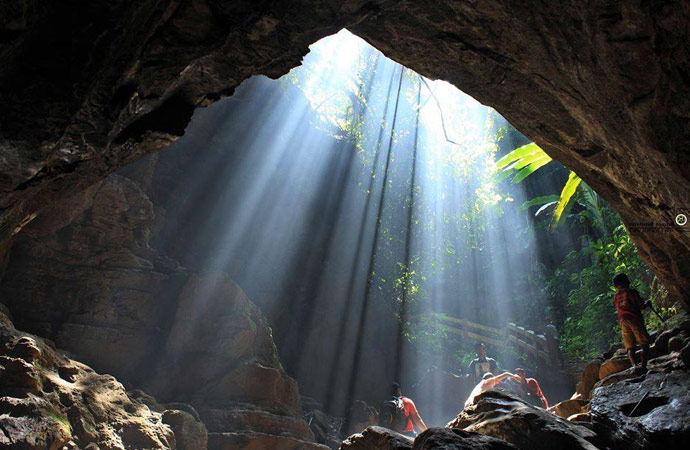

Chittagong
Chattogram: The Port City and Cultural Gateway of Bangladesh
Chattogram, the commercial capital of Bangladesh, is a region defined by its breathtaking natural beauty and rich historical heritage. Located between the lush green hills and the vast Bay of Bengal, it is home to the country’s largest seaport, making it a vital hub for national trade. Beyond its economic significance, Chattogram is famous for its unique traditional products and culinary delights. From the world-renowned Mezban culture to the intricate craftsmanship of hill-tract handicrafts and the abundance of dried fish (Shutki), the region offers a distinct identity. Through 64Zilla, we bring the authentic essence of Chattogram—ranging from its hill-grown spices to traditional handloom items—directly to the global marketplace, preserving the heritage of the Baro-Bhuiyans and the beauty of the sea.
Place of Visit

